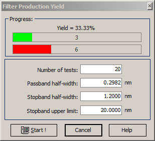
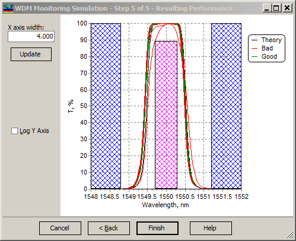

WDM Filter Production Yield
WDM Filter Production Yield
Navigation: OptiLayer Menu Commands > Analysis Menu > WDM Monitoring Simulation >
WDM Filter Production Yield
` <wdm_error_analysis___resulting.html>`__ ` <wdmerroranalysis.html>`__ ` <idh_menu_synthesis.html>`__
The Filter Production Yield module runs a set of simulated deposition procedures and calculates a percentage production yield based on the obtained statistics.

Before starting this procedure specify requirements that should be used for the yield estimation. Obviously, the analyzed filter should satisfy these requirements, otherwise the corresponding warning will be displayed and the requirements will be adjusted automatically in accordance with the analyzed filter theoretical spectral performance.

The process of yield estimation is displayed visually in the Resulting Performance window. Forbidden areas, where the simulated filter transmittance violates the requirements specified in the Production Yield dialog, are dashed on the screen. If the simulated transmittance intersects one of the forbidden areas, the simulated filter is considered defective. Otherwise, the filter is considered acceptable.
Based on the obtained statistics, the production yield estimation is displayed at the top of the Filter Production Yield window.